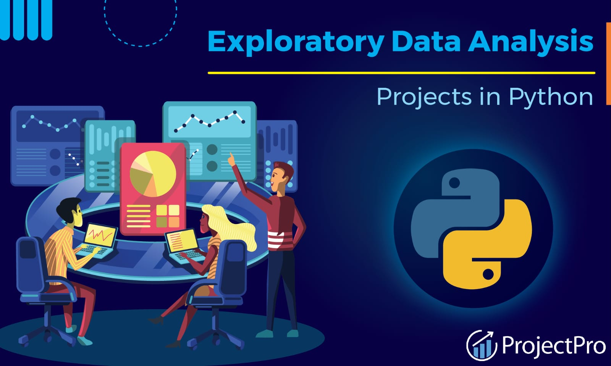

JANANI THE ANALYST
Experienced Data Analyst skilled in Power BI, Python, SQL, and Excel for data-driven insights. Adept at visualization, automation, and optimizing workflows. Strong analytical mindset with a focus on trend identification and strategic decision-making. Passionate about leveraging data to enhance business performance and innovation.
Analyzed customer reviews from Flipkart to extract sentiment and product insights.
Explored the World Happiness dataset to find patterns in well-being across countries using key indicators.
Performed sentiment analysis on social media posts to identify public opinion and engagement trends.
Visualized insights using Python libraries like Pandas, Matplotlib, Seaborn.


Developed an interactive Power BI dashboard for HR analytics to track employee performance, attrition trends, and hiring metrics with drill-down capabilities. Integrated advanced visualizations for real-time insights into workforce demographics and department-wise analysis. Additionally, created a Social Media Sentiment Analysis dashboard to monitor public perception using likes, retweets, hashtags, and time-based sentiment trends.
Analyzed global layoff trends using SQL to uncover patterns across industries, countries, and time periods.
Performed data cleaning, aggregation, and complex queries to derive actionable workforce insights.
Designed interactive Tableau dashboards to analyze Electric Vehicle data, highlighting adoption trends, regional growth, and market share insights.Built a sentiment analysis dashboard on social media data to track public opinion, top hashtags, and engagement patterns across platforms.